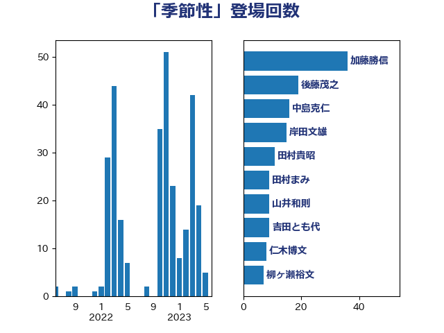

単語「季節性」

| 加藤勝信 | 自由民主党 | 36 回 |
| 後藤茂之 | 自由民主党 | 19 回 |
| 中島克仁 | 立憲民主党 | 16 回 |
| 岸田文雄 | 自由民主党 | 15 回 |
| 田村貴昭 | 日本共産党 | 11 回 |
| 田村まみ | 国民民主党 | 9 回 |
| 山井和則 | 立憲民主党 | 9 回 |
| 吉田とも代 | 日本維新の会 | 9 回 |
| 仁木博文 | 無所属 | 8 回 |
| 柳ヶ瀬裕文 | 日本維新の会 | 7 回 |
| 倉林明子 | 日本共産党 | 7 回 |
| 遠藤良太 | 日本維新の会 | 6 回 |
| 漆間譲司 | 日本維新の会 | 6 回 |
| 池下卓 | 日本維新の会 | 6 回 |
| 佐藤英道 | 公明党 | 6 回 |
| 金村龍那 | 日本維新の会 | 5 回 |
| 若松謙維 | 公明党 | 5 回 |
| 川田龍平 | 立憲民主党 | 4 回 |
| 伊佐進一 | 公明党 | 4 回 |
| 一谷勇一郎 | 日本維新の会 | 4 回 |
| 阿部知子 | 立憲民主党 | 3 回 |
| 松本尚 | 自由民主党 | 3 回 |
| 近藤和也 | 立憲民主党 | 2 回 |
| 畦元将吾 | 自由民主党 | 2 回 |
| 田畑裕明 | 自由民主党 | 2 回 |
| 梅村聡 | 日本維新の会 | 2 回 |
| 杉尾秀哉 | 立憲民主党 | 2 回 |
| 市村浩一郎 | 日本維新の会 | 2 回 |
| 山際大志郎 | 自由民主党 | 2 回 |
| 塩川鉄也 | 日本共産党 | 2 回 |
| 吉田久美子 | 公明党 | 2 回 |
| 古屋範子 | 公明党 | 2 回 |
| 友納理緒 | 自由民主党 | 2 回 |
| 高橋千鶴子 | 日本共産党 | 1 回 |
| 馬場伸幸 | 日本維新の会 | 1 回 |
| 阿部司 | 日本維新の会 | 1 回 |
| 西村康稔 | 自由民主党 | 1 回 |
| 蓮舫 | 立憲民主党 | 1 回 |
| 萩生田光一 | 自由民主党 | 1 回 |
| 窪田哲也 | 公明党 | 1 回 |
| 福重隆浩 | 公明党 | 1 回 |
| 福岡資麿 | 自由民主党 | 1 回 |
| 神谷政幸 | 自由民主党 | 1 回 |
| 石橋通宏 | 立憲民主党 | 1 回 |
| 石川昭政 | 自由民主党 | 1 回 |
| 石井正弘 | 自由民主党 | 1 回 |
| 石井啓一 | 公明党 | 1 回 |
| 田中健 | 国民民主党 | 1 回 |
| 浅田均 | 日本維新の会 | 1 回 |
| 森屋隆 | 立憲民主党 | 1 回 |
| 森屋宏 | 自由民主党 | 1 回 |
| 東徹 | 日本維新の会 | 1 回 |
| 本田顕子 | 自由民主党 | 1 回 |
| 星北斗 | 自由民主党 | 1 回 |
| 打越さく良 | 立憲民主党 | 1 回 |
| 志位和夫 | 日本共産党 | 1 回 |
| 岸真紀子 | 立憲民主党 | 1 回 |
| 山本有二 | 自由民主党 | 1 回 |
| 山本博司 | 公明党 | 1 回 |
| 宮本岳志 | 日本共産党 | 1 回 |
| 宮口治子 | 立憲民主党 | 1 回 |
| 堀井巌 | 自由民主党 | 1 回 |
| 吉田統彦 | 立憲民主党 | 1 回 |
| 佐々木紀 | 自由民主党 | 1 回 |
| 住吉寛紀 | 日本維新の会 | 1 回 |
| 伊藤孝江 | 公明党 | 1 回 |
| 伊藤孝恵 | 国民民主党 | 1 回 |
| 伊東信久 | 日本維新の会 | 1 回 |
| 井上哲士 | 日本共産党 | 1 回 |
| こやり隆史 | 自由民主党 | 1 回 |